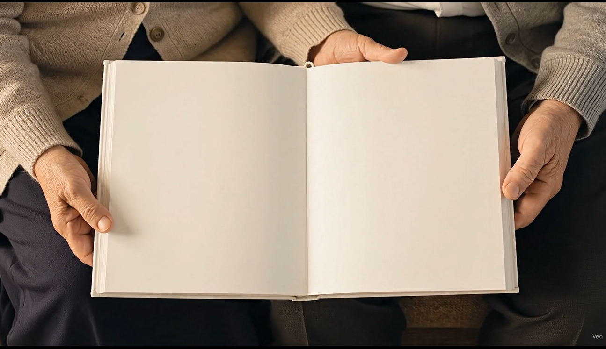
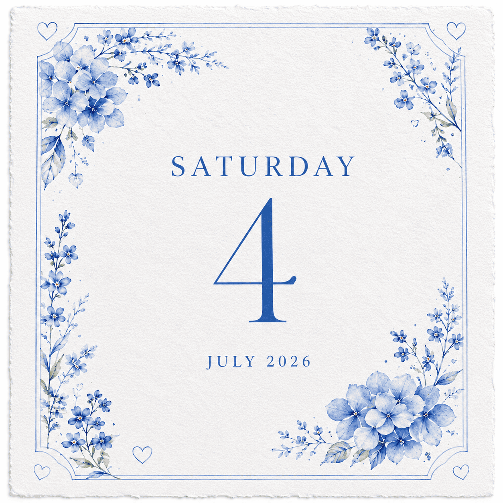

For the full experience,turn your phone sideways.

This memory will stay with me forever.
It was the day I finally told you what my heart had already decided.
And the most beautiful part… it was you.❤️
